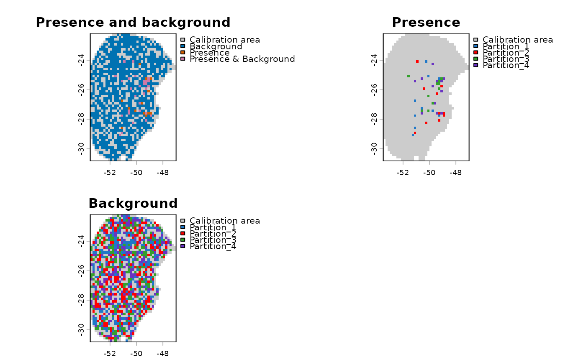

Explore the spatial distribution of partitions for occurrence and background points
Source:R/explore_partition_geo.R
explore_partition_geo.RdExplore the spatial distribution of partitions for occurrence and background points
Usage
explore_partition_geo(data, raster_variables, mask = NULL,
show_partitions = TRUE, partition_palette = "cols25",
custom_partition_palette = NULL, pr_col = "#D55E00",
bg_col = "#0072B2", pr_bg_col = "#CC79A7",
calibration_area_col = "gray80", ...)Arguments
- data
an object of class
prepared_datareturned by theprepare_data()function.- raster_variables
(SpatRaster) predictor variables used for model calibration.
- mask
(SpatRaster, SpatVector, or SpatExtent) spatial object used to mask
raster_variablesto the area where the model will be calibrated. Preferably the same object used inprepare_data(if applicable). Default is NULL.- show_partitions
(logical) whether to return
SpatRastershowing the spatial distribution of each partition for presence and background points. Default is TRUE.- partition_palette
(character) the color palette used to color the different partitions. See
?kuenm2_discrete_palettesto check available options. Default is"cols25". Only applicable ifshow_partitions = TRUE.- custom_partition_palette
(character) a character vector defining custom colors for the different partitions. The number of values must match the number of partitions in
data. Default is NULL, meaning the palette defined inpartition_palettewill be used.- pr_col
(character) the color used for cells with presence records. Default is "#D55E00".
- bg_col
(character) the color used for cells with background points. Default is "#0072B2".
- pr_bg_col
(character) the color used for cells with presences and background points. Default is "#CC79A7".
- calibration_area_col
(character) the color used for cells without presences or background points. Default is "gray80".
- ...
additional arguments passed to
terra::plot().
Value
A categorical SpatRaster with four factor values representing:
- 1 - Background cells
- 2 - Presence cells
- 3 - Cells with both presence and background
- 4 - Non-used cells
If show_partitions = TRUE, it also returns SpatRaster showing the spatial
distribution of each partition for presence and background points.
Examples
# Import raster layers
var <- terra::rast(system.file("extdata", "Current_variables.tif",
package = "kuenm2"))
# Import prepared_data
data(sp_swd, package = "kuenm2")
# Explore partitions in the geographic space
pbg <- explore_partition_geo(data = sp_swd, raster_variables = var[[1]])
terra::plot(pbg)
